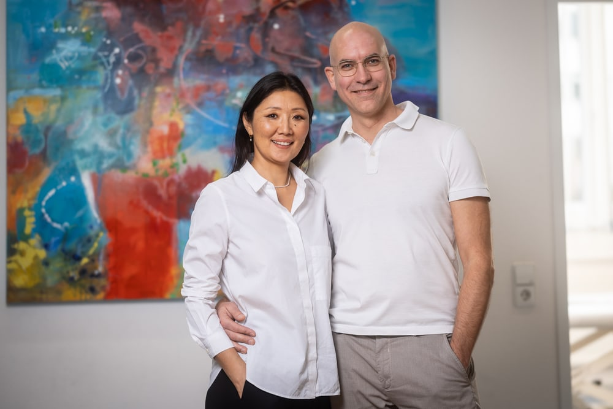
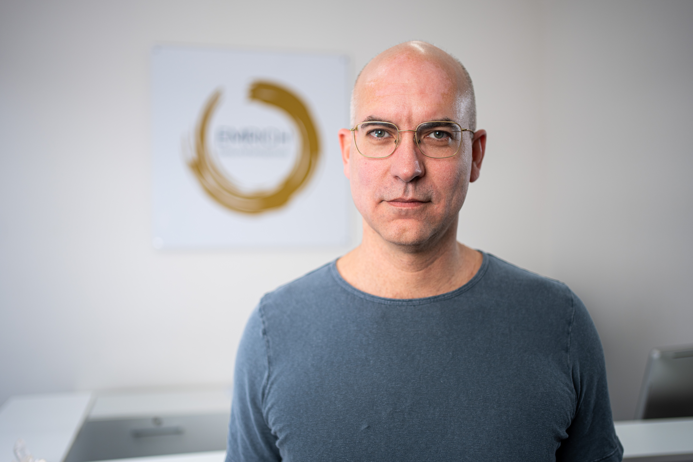
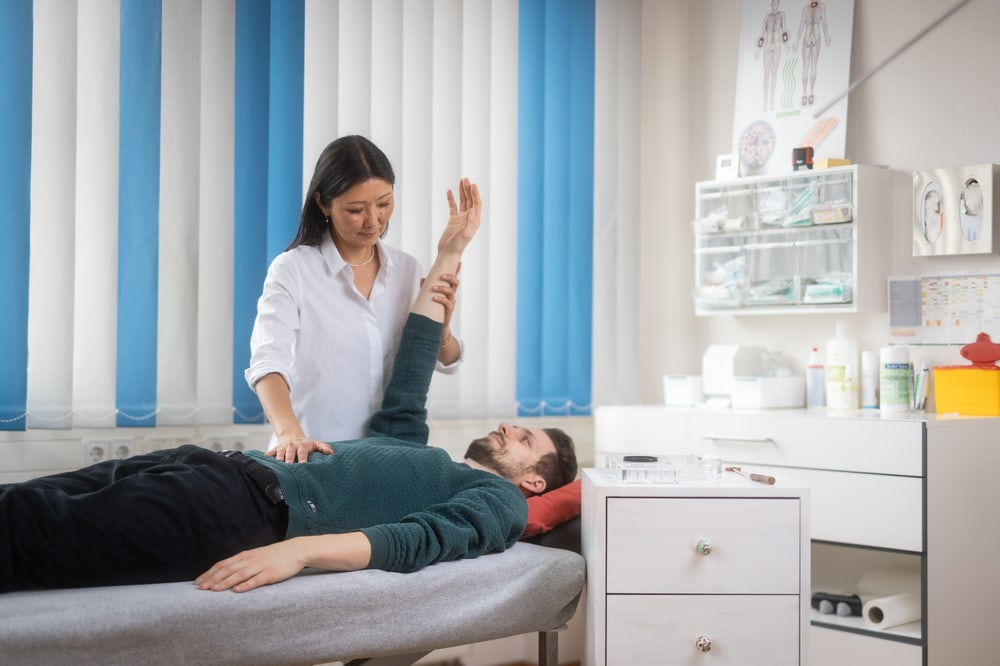
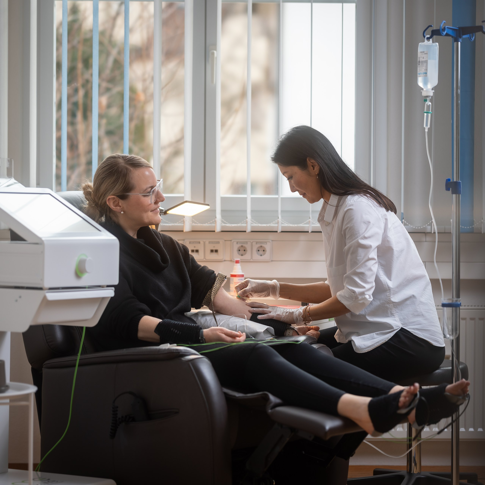
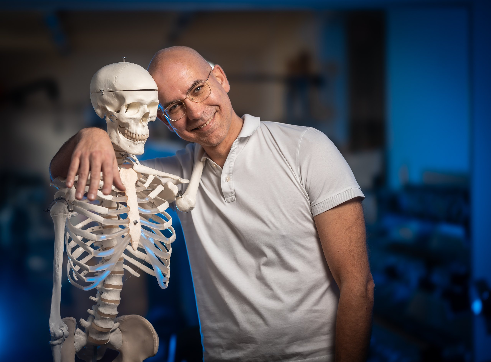
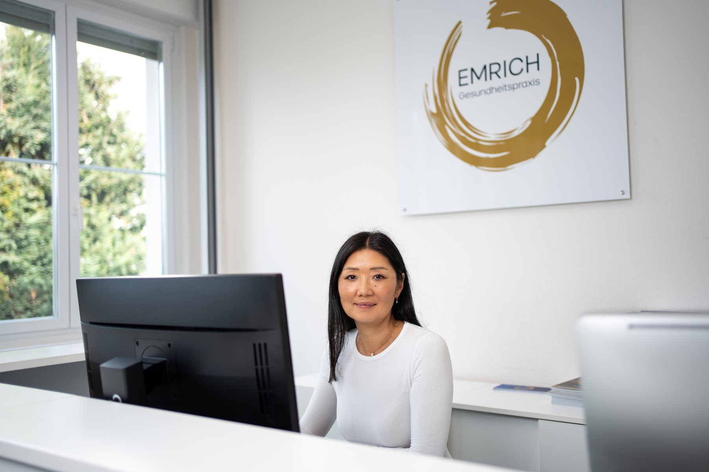

Video · testi-1.jpg
Video · testi-1.jpg
"Die Schulmedizin konnte mir nicht mehr helfen."
Jasmin
Aus Tübingen
Fast jeder Zweite leidet an Long-Covid / Post-Vac.
Mit unserem Cell Reset Konzept begleiten wir dich auf deinem Weg und gehen deinen Beschwerden auf den Grund.

Hast du anhaltende Beschwerden nach einer Covid-Impfung oder Covid Erkrankung?
Long Covid oder Post Vac beeinträchtigt das tägliche Leben erheblich und erfordert spezialisierte Aufmerksamkeit und Behandlung.
Video von Tobias Emrich zum Thema Long Covid · 09:13 min
Wir sehen, dass Covid- und impfinduzierte Erkrankungen massiv zunehmen. Fast jeder Zweite ist betroffen.
Mit unserem Konzept werden die richtigen Diagnosen gestellt sowie eine individuell abgestimmte Therapie geboten.
Informationsgespräch vereinbarenWas dich bei uns erwartet
Wir messen, statt zu raten: eine umfassende Diagnostik macht sichtbar, wo dein Körper wirklich aus dem Gleichgewicht geraten ist.
Ein Multi-System-Ansatz, der die Wurzel deiner Beschwerden behandelt – nicht nur einzelne Symptome.
Fortschritte, die sich überprüfen lassen und langfristig wirken.
Wir nehmen uns Zeit, hören zu und begleiten dich individuell.
Heilpraktik, Osteopathie & Physiotherapie – vereint in einer Hand.
Bei uns bekommst du die Antworten, die du verdienst. Informiere Dich
in einem kostenlosen, telefonischen Gespräch, unverbindlich und persönlich.

Durch jahrelange Praxiserfahrung und die Begleitung vieler Post-Vac- und Long-Covid-Patienten ist es uns gelungen, ein zielführendes und plausibles Behandlungskonzept zu erstellen.
Seit Tag 1 ist uns die Dringlichkeit bewusst, die dieser lebensverändernde Einschnitt mit sich bringt:
Vielen ist es unmöglich, nach der Impfung oder Infektion symptomfrei in ihren Alltag zurückzukehren. Meistens beginnt dort die Abwärtsspirale, und der Gesundheitszustand verschlimmert sich stetig.
Das Krankheitsbild ist komplex. Betroffen sind multiple Organsysteme. Daraus resultierende Symptome können mannigfaltig sein.

Ursachenmedizin
Sichtbare Symptome sind nur die Spitze. Wir behandeln nicht das Blatt, sondern die Wurzel.

Durch eine Infektion oder Impfung gelangen die Spike-Proteine in den gesamten Organismus. Durch das Reproduzieren der Spike-Proteine in den Zellen können Entzündungen der Gefäße, Nerven, Schleimhäute oder Organe verursacht werden. Gravierende Störungen wie Bluthochdruck, Gefäßverschlüsse, Lungenentzündungen und die Verstärkung bestehender Erkrankungen werden häufig beobachtet.
Auf lange Sicht können Spike-Proteine Beschwerden chronifizieren, die unbehandelt z. B. zu Autoimmunkrankheiten führen und jegliche Organstrukturen befallen können. Bei Post-Vac und Long-Covid sind häufig Neuronen und Gefäße betroffen; ME/CFS und POTS sind häufig beobachtete Symptome. Genetische Veranlagungen, Umweltgifte, Schwermetalle sowie persistierende Viren und Bakterien verschlimmern die Entzündungen und schwächen das Immunsystem zusätzlich.
Die Spike-Protein-Belastung kann einerseits zu einer übermäßigen Aktivierung des Immunsystems führen, da die Antikörperproduktion verstärkt aktiv ist. Gleichzeitig kann der Teil des Immunsystems, der für das Erkennen geschädigter Zellen zuständig ist, geschwächt werden. Häufige Folgen sind z. B. Endotheliitis, die Zerstörung der Zellkraftwerke (Mitochondrien) und eine Schädigung der Blut-Hirn-Schranke.
Long Covid und Post-Vac wirken bis tief in die Zellen – sie stören Mitochondrien, Energieproduktion und Immunregulation. Genau dort setzt unser Cell Reset Konzept an: Wir schaffen die Bedingungen, unter denen sich deine Zellen wieder regenerieren können.
Du hast wahrscheinlich schon einiges versucht – und trotzdem keine echte Besserung erlebt. Das liegt selten an dir. Es liegt am Ansatz.
Die Therapie
In unserer Heilpraktikerpraxis in Reutlingen, Emrich Gesundheitspraxis, setzen wir auf eine individuelle und umfassende Behandlung von Long Covid & Post Vac-Syndrom.
Gesundheit durch die richtigen Bedingungen auf Zellebene
In diesem Video erklärt dir Tobias Emrich persönlich, wie dein Ersttermin in unserer Praxis abläuft – und welches Ziel dahinter steht.
Tobias Emrich · Gesundheitspraxis Emrich, Reutlingen
Du rufst bei uns an, schilderst kurz dein Anliegen – und wir vereinbaren deinen Ersttermin.
Wir nehmen uns wirklich Zeit für deinen Ersttermin – ausführlich statt 5-Minuten-Medizin.
Den Bogen füllst du in Ruhe zu Hause aus und bringst ihn mit – so verlieren wir keine Zeit.
Wir hören zu, klären deine Ziele – und sagen dir offen, ob und wie wir dir helfen können.
Nach der ausführlichen Anamnese folgen – je nach Bedarf – Laborwerte und eine körperliche Untersuchung. Daraus erstellen wir deinen umfassenden, individuellen Behandlungsplan. Dabei greifen wir auf ein großes Netzwerk aus Therapeuten, Ärzten und Zahnärzten zurück.
Die Ausgangslage
Oberflächliche Symptombehandlung
Wissen nicht, woher die Beschwerden kommen
Schon viel probiert ohne langfristigen Erfolg
Werden nicht ernst genommen
Wenn du immer das Gleiche tust, bekommst du auch immer die gleichen Ergebnisse. Um wirklich etwas zu bewegen, müssen wir manchmal neue Wege gehen.
Genau darum geht es bei uns: Wir finden diese frischen, anderen Ansätze in der modernen Medizin und geben sie an dich weiter.
Informationsgespräch vereinbaren– Telefonisches 15min Gespräch –

Telefonisches 15-Minuten-Informationsgespräch – kostenlos & unverbindlich.
Informationsgespräch vereinbarenErfahre von anderen Menschen, was eine Behandlung bei uns bewirken kann.
Video · testi-1.jpg
 Video · testi-2.jpg
Video · testi-2.jpg
 Video · testi-3.jpg
Video · testi-3.jpg
 Video · testi-4.jpg
Video · testi-4.jpg
 Video · testi-5.jpg
Video · testi-5.jpg
 Video · testi-6.jpg
Video · testi-6.jpg
 Video · testi-7.jpg
Video · testi-7.jpg
Mehr als 1.000 zufriedene Patienten
Unglaubliches Fachwissen und magische Hände. Tobias hilft mir seit 15 Jahren bei allen Schmerzen und Verspannungen. Man lernt unglaublich viel über die Zusammenhänge im Körper – das ist wirklich ganzheitliche Medizin.
Mit einem dreifachen Bandscheibenvorfall gekommen – alle Ärzte rieten zur OP. Tobi hat mich wieder hingekriegt, mit Einfühlungsvermögen und exzellentem Wissen. Er ist Physiotherapeut, Osteopath und Heilpraktiker in einem. Absolute Empfehlung!
Nach jahrelangen Schmerzen endlich ernst genommen. Schon nach der ersten Sitzung deutlich mehr Lebensqualität. Tobias hat ein unfassbares Wissen und bildet sich permanent weiter – diese Praxis kann ich jedem wärmstens empfehlen.

Über uns
Tobias Emrich ist Heilpraktiker, Osteopath und Physiotherapeut – und führt die Gesundheitspraxis Emrich in Reutlingen gemeinsam mit seiner Frau.
Seit über 27 Jahren begleitet er Menschen mit chronischen und komplexen Beschwerden. Sein Blick aufs Ganze – drei Fachrichtungen in einer Hand – erlaubt es ihm, Ursachen zu erkennen, wo andere nur Symptome sehen.
Aus dieser Erfahrung hat er für Long-Covid und Post-Vac das Cell Reset Konzept entwickelt: messbar, individuell und auf nachhaltige Regeneration ausgerichtet.
Informationsgespräch vereinbaren– Telefonisches 15min Gespräch –Qualifikation & Mitgliedschaften
Aus- & Weiterbildungen
Das Team
Aufgewachsen in der Mongolei als Tochter eines Tierarztes – eng verbunden mit Natur, Leben und der Frage, wie Familie, Emotionen und Gesundheit zusammenhängen.
Schon früh faszinierte sie, wie sich seelische und körperliche Beschwerden bis zur Ursache zurückverfolgen lassen. Ihr Ansatz ist bodenständig: Nicht hinter jeder Beschwerde steckt ein tiefes seelisches Thema – oft sind es Bewegungsmangel, Stress oder Ernährung.
Nach einer mehrjährigen Auseinandersetzung mit Hormonstoffwechsel und Zellgesundheit – auf ihrem eigenen Weg zum Wunschkind – liegt ihr besonders die Unterstützung bei hormonellen Themen am Herzen.

Aus- & Weiterbildungen
Unsere Patienten kennen diese Fragen nur zu gut und suchen jemanden, der sich Zeit nimmt, Ursachen ermittelt, Zusammenhänge verständlich erläutert und Wege zu mehr Vitalität und gesteigerter Lebensqualität aufzeigt.
Informationsgespräch vereinbaren– Telefonisches 15min Gespräch –
So kannst du einen Termin bei uns vereinbaren
Ein kurzes kostenloses Vorgespräch, mit einer unserer geschulten Mitarbeiterinnen, um Sie ein wenig besser kennenzulernen, und die Thematik mit der Sie sich an uns wenden einordnen zu können.
Wir schauen uns genau an, was deine Beschwerden verursacht, damit wir einen Behandlungsplan erstellen können, der wirklich zu dir passt und langfristig hilft.
In einem ausführlichen Gespräch gehen wir den Ursachen deiner Symptome auf den Grund und finden heraus, welche Faktoren möglicherweise eine Rolle spielen.
Wir nutzen eine moderne Methode, um herauszufinden, warum dein Körper nicht richtig funktioniert. So verstehen wir, wie deine Beschwerden entstanden sind.
Wir nehmen uns wirklich die Zeit, alle gesammelten Mess- und Untersuchungsergebnisse genau unter die Lupe zu nehmen. Dabei ist uns vor allem wichtig, dass alles messbar und nachhaltig ist.



Standort Reutlingen — wir behandeln Patienten aus ganz Deutschland, Österreich & der Schweiz.
Unsere Antworten auf deine Fragen
Der Hausarzt arbeitet meist mit einem Standard-Blutbild, das bei Long-Covid und Post-Vac häufig unauffällig bleibt – obwohl du klare Beschwerden hast. Wir nehmen uns Zeit für eine tiefergehende, ganzheitliche Bestandsaufnahme, suchen gezielt nach den Ursachen und stellen darauf einen individuellen Plan zusammen, statt nur einzelne Symptome zu behandeln.
Leistungen aus dem Bereich der Heilpraktik sind in der Regel keine Leistung der gesetzlichen Krankenkassen. Je nach privater Krankenversicherung oder Zusatzversicherung ist eine (teilweise) Erstattung möglich. Im kostenlosen Erstgespräch erklären wir dir transparent, womit du rechnen kannst.
Unsere Praxis ist in Reutlingen – wir betreuen aber Patienten aus ganz Deutschland, Österreich und der Schweiz. Wie viel Behandlung vor Ort sinnvoll ist, hängt von deinem individuellen Fall ab. Das klären wir gemeinsam im Erstgespräch.
Es ist ein telefonisches Gespräch von rund 15 Minuten. Wir lernen deine Situation kennen, ordnen deine Beschwerden ein und klären gemeinsam, ob und wie unser Konzept dir helfen kann – unverbindlich und ohne Druck.
Ja. Long-Covid und Post-Vac haben verwandte Mechanismen – unter anderem die Belastung durch das Spike-Protein. Unser Cell Reset Konzept ist auf beide Beschwerdebilder ausgerichtet.
Jeder Mensch und jeder Verlauf ist anders, deshalb geben wir keine pauschalen Heilungsversprechen. Was wir versprechen: eine gründliche Ursachensuche, einen ehrlichen Plan und eine Begleitung, die dich ernst nimmt. Im Erstgespräch schätzen wir gemeinsam ein, wie realistisch eine Verbesserung in deinem Fall ist.
Obwohl Kinder seltener als Erwachsene an COVID-19 erkranken, können auch sie nach einer Infektion an Post-/Long-Covid-Symptomen leiden. Ähnlich wie bei Erwachsenen treten vor allem Erschöpfung, Gedächtnis- und Konzentrationsstörungen, Kopf-, Bauch- und Halsschmerzen, Husten, Schlafprobleme, ein eingeschränkter Geruchssinn sowie Muskel- und Gelenkschmerzen auf.